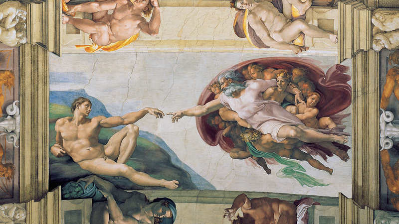
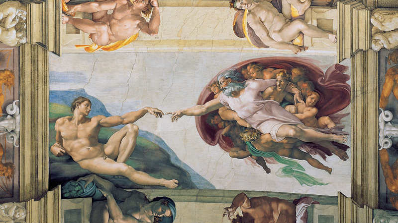

Infância e Juventude
Michelangelo Buonarroti nasceu em 6 de março de 1475, na Toscana, Itália. Poucos meses após seu nascimento, Michelangelo foi levado para Florença, cidade para onde sua família se mudou. A infância de Michelangelo foi marcada pelo falecimento de sua mãe em 1481. Desde cedo mostrou talento para as artes e, aos 13 anos, tornou-se aprendiz no ateliê de Domenico Ghirlandaio, onde aprendeu técnicas de pintura e escultura.
O Escultor e Pintor
Michelangelo é conhecido por suas esculturas impressionantes, como:
 

O Gênio Criativo
Além de escultor e pintor, Michelangelo foi arquiteto e poeta. Projetou a cúpula da Basílica de São Pedro, em Roma, e deixou poemas que revelam sua sensibilidade artística.
Curiosidades sobre Michelangelo
- Michelangelo viveu até os 88 anos, uma idade avançada para a época.
- Era perfeccionista e muitas vezes destruía obras que não considerava boas o suficiente.
- Assinou apenas uma de suas esculturas: a Pietà.
- Trabalhou para vários papas e foi admirado por reis e nobres.

Legado Imortal
Michelangelo deixou um legado que inspira artistas até hoje. Sua genialidade está presente em cada detalhe de suas obras, tornando-o um dos pilares do Renascimento.